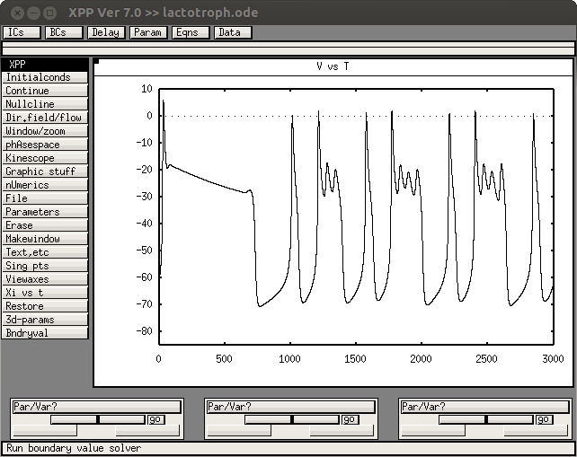
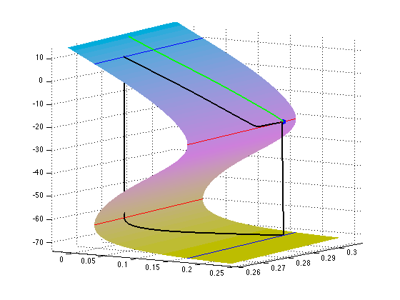

The models for the paper W. Teka, J. Tabak, T. Vo, M. Wechselberger, and R. Bertram (2011) The Dynamics Underlying Pseudo-Plateau Bursting in a Pituitary Cell Model, Journal of Mathematical Neuroscience, 1:12, doi:10.1186/2190-8567-1-12 are available at the authors web site: http://www.math.fsu.edu/~bertram/software/pituitary/JMN_11 The 3-variable lactotroph model used in Figures 4, 9, 10, 12, and 13: lactotroph.ode generates a figure like this:  and the Matlab code for the critical manifold and its 2-D projection and various curves, used in Figures 2 and 3: manifold.m generates a figure which when rotated looks like Figure 2:  see the authors web site for these and more.